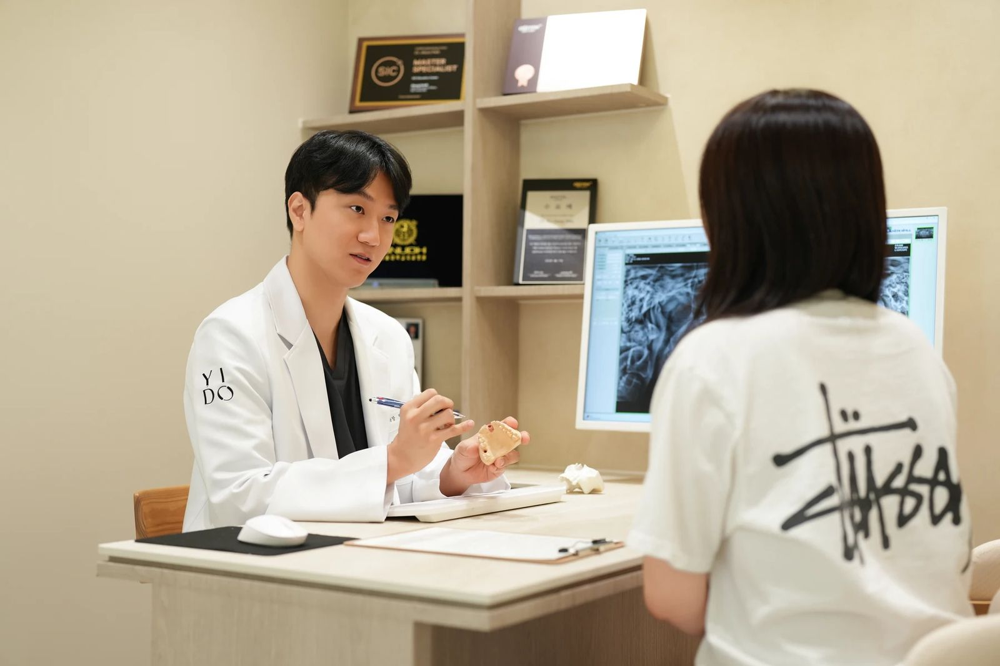

빠진 치아, 어떤 방법으로 채울까요?
각 방법이 무엇을 지지대로 쓰는지 비교하고, 보험 조건은 따로 확인하세요.
치과에서 들었지만 정확히 묻지 못했던 말. 치료를 결정하기 전에 뜻과 확인할 질문부터 차분히 알아보세요.

치료명, 증상, 익숙한 표현을 입력해 보세요. ‘치아 씌우기’로 찾아도 크라운이 나옵니다.
용어 23개
치아가 없는 부위의 턱뼈에 인공치근을 심고 상부 보철물을 연결하는 치료입니다.
설명 읽기 임플란트·발치임플란트 등을 계획할 때 부족한 치조골을 보완하기 위해 고려하는 술식입니다.
설명 읽기 임플란트·발치가장 뒤쪽에서 나오는 세 번째 큰어금니로 위치와 주변 상태에 따라 관리가 달라집니다.
설명 읽기 보철·수복남아 있는 치아를 덮어 형태와 기능을 보완하는 고정성 보철물입니다.
설명 읽기 보철·수복치아 일부를 본떠 제작한 수복물을 붙여 결손 부위를 보완하는 치료입니다.
설명 읽기 보철·수복빠진 치아 양옆의 치아 등을 지지대로 사용해 결손 부위를 연결하는 고정성 보철입니다.
설명 읽기 보철·수복여러 개의 치아가 없을 때 끼웠다 뺄 수 있도록 제작하는 보철물입니다.
설명 읽기 보존·신경치료구강 내 세균이 만든 산으로 치아 조직이 손상되는 질환입니다.
설명 읽기 보존·신경치료치아 표면의 무기질이 빠지기 시작했지만 아직 뚜렷한 구멍이 생기지 않은 초기 우식과 관리 방법입니다.
설명 읽기 보존·신경치료칫솔이 닿기 어려운 치아 사이의 우식이 어떻게 발견되고 어떤 검사가 필요한지 정리합니다.
설명 읽기 보존·신경치료기존 수복물 가장자리에 생기는 우식의 의미와 검사·치료 판단 기준입니다.
설명 읽기 보존·신경치료치아 안쪽의 감염되거나 손상된 치수 조직을 제거하고 내부를 세척·충전하는 치료입니다.
설명 읽기 보존·신경치료치아색 재료를 치아에 접착해 작은 결손이나 충치 부위를 수복하는 방법입니다.
설명 읽기 잇몸·예방치아를 지지하는 잇몸과 주변 조직에 염증이 진행된 상태를 말합니다.
설명 읽기 잇몸·예방칫솔질로 제거하기 어려운 치석과 침착물을 기구로 제거하는 처치입니다.
설명 읽기 교정·성장치아 이동을 위해 단계별로 교체해 착용하는 투명한 가철성 교정장치입니다.
설명 읽기 교정·성장성장 중인 어린이의 치열과 턱 성장 상태를 살펴 필요한 시기와 방법을 정하는 교정 진료입니다.
설명 읽기 교정·성장교정치료 후 치아가 이동한 위치에 적응하도록 돕는 고정식 또는 가철식 장치입니다.
설명 읽기 턱관절·구강외과턱관절이나 씹는 근육에서 통증, 소리, 입 벌리기 제한이 나타나는 상태를 포괄합니다.
설명 읽기 턱관절·구강외과잠을 자거나 깨어 있을 때 이를 갈거나 강하게 무는 반복 행동입니다.
설명 읽기 증상·통증찬물, 바람, 양치 자극에 짧고 날카로운 통증이 느껴지는 상태를 설명합니다.
설명 읽기 검사·진단입을 다물거나 씹을 때 위아래 치아가 만나는 관계입니다.
설명 읽기 보험·비용연령, 치아 상태, 인정 개수와 본인부담 등 일반 급여 기준을 확인합니다.
설명 읽기일치하는 항목이 없습니다. 다른 말로 찾아보거나 증상으로 찾기를 이용해 주세요.
같은 고민에 연결되는 글을 모았습니다. 치료를 정하기 전에 방법의 차이와 확인할 질문을 알아보세요.
같은 증상도 원인이 다를 수 있습니다. 온라인 설명만으로 스스로 진단하기보다, 상담에서 무엇을 확인할지 정리하는 데 활용하세요.
같은 증상도 원인이 다를 수 있습니다. 궁금한 점을 정리해 오시면 진료실에서 함께 확인합니다.